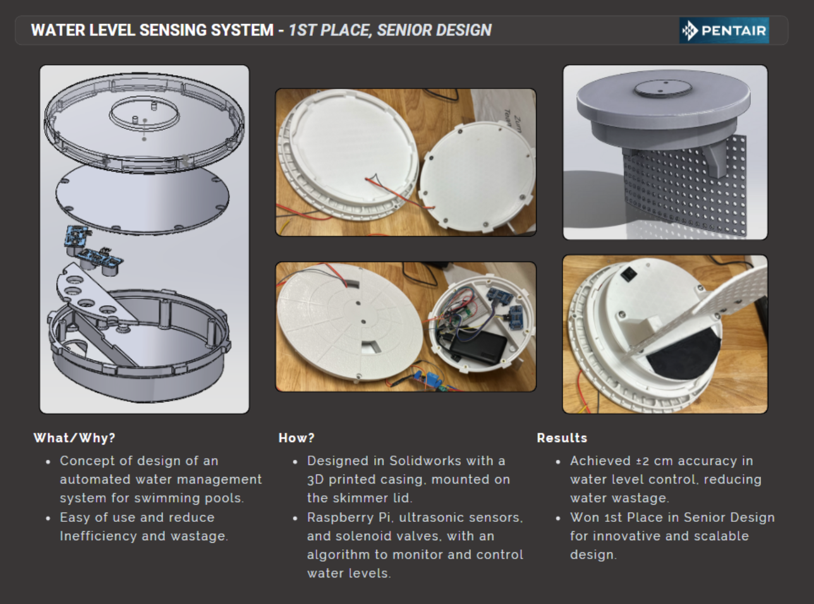
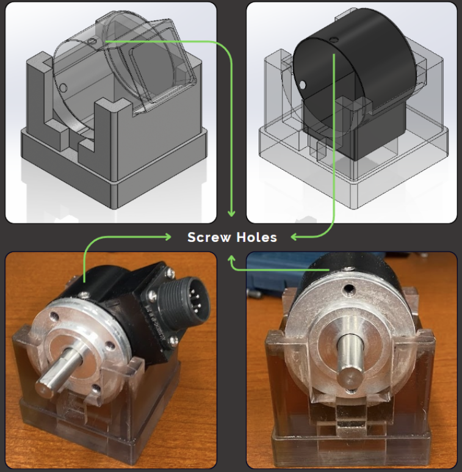
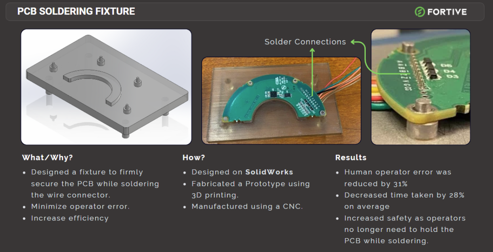
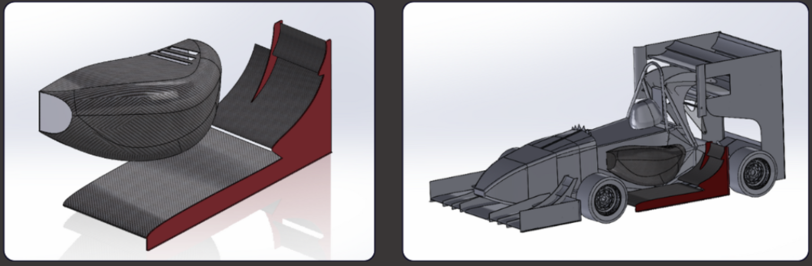
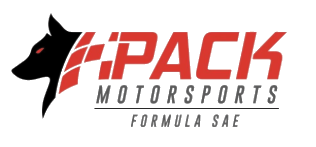

sector / projects
Projects
Robotics, reinforcement learning, humanoid control, and hands-on mechanical design, from simulation to hardware.
sector / projects
Robotics, reinforcement learning, humanoid control, and hands-on mechanical design, from simulation to hardware.
Trained a So-Arm robotic manipulator with Proximal Policy Optimization in NVIDIA Isaac Lab. The policy learns coordinated, precise grasping entirely from reward signal. The clip on the left is the fully trained agent running live.
Stage 1 · untrained
Stage 2 · mid-training
Task-level RL (reach, grasp, lift) layered on a pretrained AMO whole-body controller on a Unitree G1 in MuJoCo. The robot walks to objects and manipulates them, demonstrated with a screwdriver pick-and-place task.
Locomotion + manipulation task
Screwdriver pick-and-place
End-to-end humanoid locomotion stack: WBC formulated as a QP over joint accelerations and reaction forces for real-time balancing torques, plus a DCM planner that decomposes CoM dynamics into stable/unstable components for footstep generation under ZMP constraints.


Mechanical Engineering Internship
Identified a recurring punch retraction issue causing quality defects. Designed 4 new stripper plates in SolidWorks, 3D-printed prototypes for rapid iteration, and validated compatibility with the rocker punch machine.
Addressed frequent scratching and warping of M3 Frunk Clips during transport to General Assembly. Designed custom protective clip covers in SolidWorks, 3D-printed prototypes, and iterated on durability, significantly reducing scrap.
Engineered a spring-loaded installation tool for Parking Assist sensors to eliminate Not-Seated-Properly defects. Validated through multiple prototypes and refined with production teams for ergonomic use.
Software & Data Engineering Internship
Designed and shipped 10 production dashboards covering casting quality, laser weld, adhesive inspection, and audit tracking. Replaced manual Excel reporting with real-time monitoring, defect-location heat maps, and pareto drill-downs filterable by shift, machine, and date.
Built a MATLAB pipeline that ingests raw laser-gauge metrology data and evaluates 74 gap/flush characteristics across vehicle closures, auto-flagging high-failure points with mean and standard deviation overlays to target dimensional improvements.
Ran statistical process control studies for hood-set repeatability across six fixture positions, producing Minitab capability sixpacks to validate process stability. Also led shop-floor root-cause investigations (5W+H) that landed poke-yoke countermeasures with process teams.

Robotic arm manipulation pipeline with forward/inverse kinematics, trajectory generation, and real-time control. Computes joint-space trajectories from task-space goals via analytical IK, then executes smooth motion profiles with PD control and gravity compensation.

Automated water management system for swimming pools. Designed in SolidWorks with a 3D-printed casing mounted on the skimmer lid. Raspberry Pi with ultrasonic sensors and solenoid valves monitors and controls water levels in real-time.

Versatile fixture to securely hold rotary encoder modules at precise angles for cover assembly. Designed in SolidWorks and manufactured on a resin 3D printer. Minimized operator error and increased safety, since operators no longer hold the module during screwing.

Fixture that firmly secures PCBs while soldering wire connectors. Designed in SolidWorks, prototyped via 3D printing, final version CNC-machined. Improved safety, since operators no longer hold the board during soldering.


Concept sidepods and side wings for the FSAE EV car. Reduced drag and increased downforce through CFD-optimized geometry, validated with extensive simulation runs.